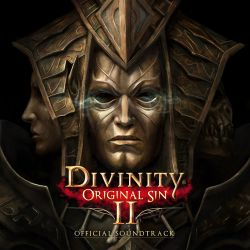
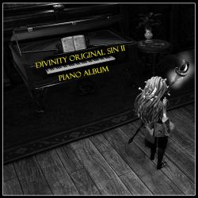
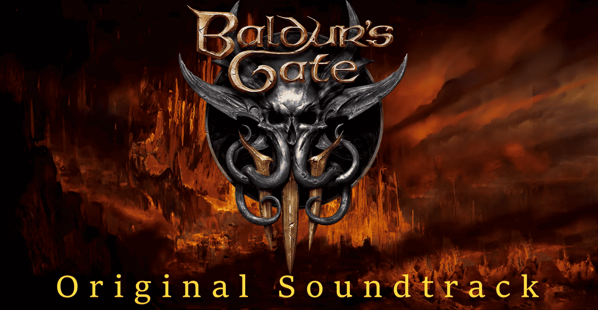

Albums
Divinity: Original Sin 2 - Original Soundtrack

- Power of Innocence 2017 (Orchestral Version)
- Embrace of the Deathfog
- The Queen's High Seas (Beast's Theme)
- Divinity - Original Sin 2 (Main Theme)
- Welcome to Fort Joy
- Rivellon
- A Part of Their Story
- Symphony of the Void
- Reaper's Coast
- Divine's Lament
- Dancing with the Source (Oud Version)
- Sins and Gods (Strings Version)
- Dancing with the Source (Tambura Version)
Divinity Original Sin II Piano Album

- Part of Their Story
- Sins and Gods
- Fane's Theme
- Dancing with the Source
- Red Prince Theme
- Power of Innocent
- Welcome to Fort Joy
- Driftwood
- Sebille's Theme
- The Queen's High Seas
- Mead, Gold and Blood
- Path of the Godwoken
- Main Theme
Baldur's Gate 3 - Original Soundtrack

- I Want to Live
- Weeping Dawn
- Harpy Song
- Restless Dreams
- Down by The River
- The Power
- Dream Song
- Raphael's Theme
- Dream Song 2
- DreamWalk
- The Power (instrumental)
- Wash My Pain Away
- Song of Power